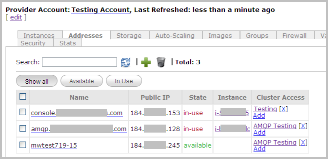
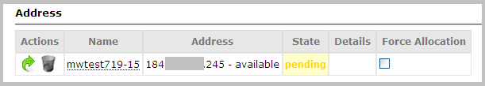

Managing IP Addresses
Elastic IP addresses are used throughout Nimbul. Look for Addresses tabs that allow you to view and work with addresses as they relate to provider accounts, clusters, servers and instances.
| PERMISSIONS REQUIRED |
| To add IP addresses to a provider account, you must have administrator access to the relevant provider account. Cluster administrators can attach IP addresses to specific instances. |
Topics covered on this page:
Add and Release IP Addresses
Attach and Detach IP Addresses
Add and Release IP Addresses
Adding an Address
To add an IP address to a provider account and give certain clusters access to the address, complete these steps:
- In the main Nimbul menu, click Provider Accounts.
- In the Name column, click the name of the account you want to configure. The provider account details page appears. (You can also open this page by clicking the name of a provider account anywhere in the system, such as on a dashboard.)
- Click the Addresses tab. On this tab, you can view the addresses currently allocated to this account. The State column indicates whether the address is
in-useoravailable, and the Instance column provides quick access to instances with addresses attached.
 - To allocate a new address to the account, click the green plus sign at the top of the tab, near the Search box.
- In the pop-up that appears, enter a Name for the address. You can change this name at any time, and it does not have to be a domain name; this field is simply an identifier for the address.
- Click Create. Nimbul will request allocation of a new IP address from the cloud provider. The allocation process make take several seconds. When the address is available, the State column will change from
unknowntoavailable. - Proceed to the next section to configure cluster access for the address.
Configuring Cluster Access to an Address
- View the Addresses tab for the provider account as described in steps 1–3 above.
- Use the Search box to find the IP address in the list.
- In the Cluster Access column of the table, click Add.
- In the pop-up that appears, type the name of a cluster, or type a few characters to see cluster names that contain the characters.
- Click Close. You will now be able to attach this IP address to instances started in the specified cluster. For details, see Viewing and Updating Instances.
Releasing an Address
Even when they are not in use and have been detached from all instances, IP addresses remain allocated to your account. Amazon Web Services imposes a small charge for IP addresses that have been allocated to an account but are not attached to an instance.
To release addresses from the provider account in order to prevent charges from accruing, complete these steps:
- View the Addresses tab for the provider account as described in steps 1–3 above.
- Select the checkbox in the first column for the addresses you want to release.
- Click the trash can icon at the top of the tab. A warning message appears. Click OK.
Attach and Detach IP Addresses
To attach an IP address to an instance, complete these steps:
- View the instance details page by clicking the instance ID anywhere you find it in the system (e.g., on a dashboard; on the Instances tab for a provider account; or on the Instances or Servers tab for a cluster).
- In the Address area, click Add.
- Select an available IP address from the list. To remap an address that is currently attached to another instance, select the address and check the Force Allocation box.
 - Click the Add button. The address will be assigned to the instance.
- Complete the mapping process by clicking the green arrow icon.
To detach an address from an instance, complete these steps:
- View the instance details page by clicking the instance ID anywhere you find it in the system (e.g., on a dashboard; on the Instances tab for a provider account; or on the Instances or Servers tab for a cluster).
- In the Addresses area, click the yellow arrow icon next to the address you want to detach.
- (Optional) To completely disassociate the address from the instance, click the trash can icon. The address will remain allocated to the account for attaching to other instances.
Related Topics
End of section. Next section: Security »